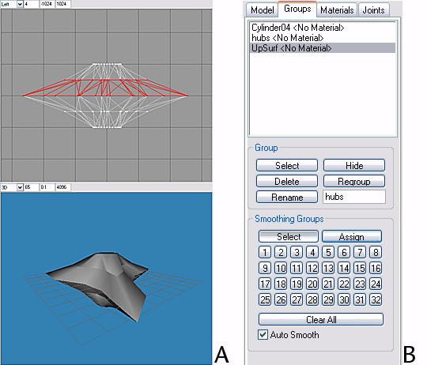

MilkShape For UT2003 Static Meshes/Modeling And Smoothing In MS3D
NOTE: The pictures in this tutorial do not show the interface elements to relative scale.
Modeling the shuriken
Launch MilkShape. Enable the Model tab. Enable the Cylinder tool button, enter Stacks = 4, Slices = 15 in the data entry fields. Close Cylinder should be checked.
In the Front viewport, place the pointer at X = -40, Y = 20, click LMB & drag to X = 40, Y = -20.
In the Tools box, enable Select. In the Select Options box, enable Vertex.
In the Front viewport, drag-select the vertices of the top surface (cap) of the cylinder (drag-select = LMB click & drag to lasso the vertices).
Add the vertices of the bottom cap to the selection (Shift + LMB drag-select adds vertices to the selection).
In the toolbox, enable Scale. In Scale Options, disable the Y axis button. In the data entry fields, enter .30 in X and Z (.30 = 30% scale factor). Click the Scale button. The result is shown in FIG. 1
![[MS3DT-01]](images/ms3dt-01.gif) FIG. 1 Scaling the caps' vertices |
Enable Select (shortcut key = F1), Options = Vertex. In the Top viewport, drag-select the vertices on the circumference of the cylinder that are located at the 3 o'clock position. Using this position as 1, count vertices around the circumference (either direction) and add the vertices at counts 6 and 11 to the selection.
Scale (shortcut key = F4) the selected vertices .50 in X & Z (FIG. 2).
![[MS3DT-02]](images/ms3dt-02.gif) FIG. 2 Scaling down 3 circumference vertices |
Counting from position 1 on the circumference, select vertices at 3, 8 and 13. Scale the vertices 1.5 in X & Z (FIG. 3).
FIG. 3 Scaling up 3 circumference vertices |
Enable the Rotate tool (shortcut key = F3). Using the data entry fields, rotate the selected vertices -10 in Y (FIG. 4).
FIG. 4 Rotating 3 circumference vertices |
Counting from position 1 on the circumference, select vertices at 5, 10 and 15. Scale the vertices .73 in X & Z. Rotate the vertices 10 in Y.
Counting from position 1 on the circumference, select vertices at 2, 7 and 12. Rotate the vertices -10 in Y.
Select vertices at 3, 8 and 13. With Rotate enabled, click LMB & drag in the Top viewport to rotate vertices slightly counterclockwise. In like manner, select, rotate, and scale sets of vertices at every 5th count, until the top view of the model closely resembles FIG. 5.
![[MS3DT-05]](images/ms3dt-05.gif) FIG. 5 Top view profile is taking shape |
In the Left viewport, drag-select the vertices highlighted (red) in FIG. 6 and scale .50 in X & Z. Select the vertices of the cylinder caps and scale .73 in X & Z (FIG. 6).
![[MS3DT-06]](images/ms3dt-06.gif) FIG. 6 Modeling in the Left viewport |
Enable Select, Select Options=Face, and By Vertex is checked ( Select|Face|By Vertex ). Drag-select the top & bottom cap vertices. The faces connected to these vertices will be highlighted (FIG. 7A).
![[MS3DT-07]](images/ms3dt-07.gif) FIG 7. Selecting faces & regrouping |
Enable the Groups tab. Click the Regroup button. Rename Regroup 1 to hubs (FIG. 7B).
Enable the Model tab. Enable Select|Face|By Vertex. In the Front viewport, drag-select the top two rows of vertices. The faces of the top half of the model will be highlighted.
Drag-deselect the vertices of the top cap (drag-deselect = Shift + click & drag with RMB). The faces just above the horizontal centerline of the model should be highlighted (FIG. 8A). Enable Groups, Regroup the faces, and rename them UpSurf (FIG. 8B).

FIG. 8 Selecting & regrouping more faces |
Enable Model|Select|Face|By Vertex. As above, select the faces just below the model's horizontal centerline. Switch to the Groups tab, Regroup these faces and rename them DownSurf (FIG 9).
![[MS3DT-09]](images/ms3dt-09.gif) FIG. 9 Remaining faces regrouped & renamed |
Click on the background of any ortho viewport (Front, Side or Top) to deselect all, or use the Shift+Ctrl+A shortcut.
In the Groups list, highlight hubs and click the Select button in the Group box. Faces in the hubs group will be highlighted.
In the Smoothing Groups box, enable the Assign button & click on the square smoothing group button labeled 1. In the 3D viewport, the faces of group hubs will be smoothed.
Deselect all, then highlight UpSurf in the Groups list & click Group|Select. In Smoothing Groups, assign smoothing group number 2 to UpSurf.
Deselect all, then highlight DownSurf in the Groups list & click Group|Select. In Smoothing Groups, assign smoothing group number 3 to DownSurf.
![[MS3DT-10]](images/ms3dt-10.gif) FIG. 11 Smoothing group assignments |
There should now be hard (unsmoothed) edges between hubs, UpSurf and DownSurf.
Switch to Model, select all (Ctrl+A), and scale the entire model .30 in Y only (disable the X & Z axis buttons).
Enable Select|Vertex and in the Front viewport drag-select the vertices of the caps, then Scale then .73 in X & Z.
In the Top viewport, drag-select the vertices at the origin (center of hubs). Enable Scale in Y only, then LMB click + drag in the Front viewport to scale up the central vertices a small amount in Y, rounding the off the hubs slightly. The modeling is complete.
![[MS3DT-11]](images/ms3dt-11.gif) FIG. 10 The finished model |
Next: Materials and Smoothing for UEd3